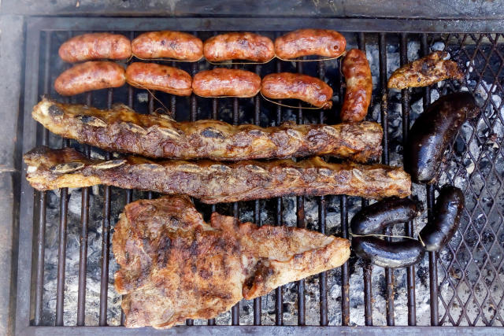

Asado Argentino

Descripcion
En otras palabras, un asado es una barbacoa, a la manera argentina. Este término se usa para hablar sobre el plato en sí mismo, pero también para definir su técnica de preparación.Muy a menudo, el asado se cocina con vacuno (carne de res). Es la carne más consumida de Sudamérica
El asado, barbacoa, parrilla o parrillada es una técnica de cocción mediante la cual los alimentos (generalmente cortes de carne) son expuestos al calor de fuego o brasas para que se cocinen lentamente
El calor se transmite gradualmente al alimento, que por lo general está suspendido sobre el fuego o cerca de las brasas. El fuego se logra a partir de carbón vegetal o de madera, aunque hay también parrillas de gas. Las maderas más usadas son maderas duras como las de roble, mezquite, quebracho o coronilla, que arden a temperaturas altas y por un tiempo prolongado. Si bien la carne más empleada es la carne vacuna, también se asa carne de cerdo, de cordero, cabrito, pescado, pollo, langostinos y diversos embutidos.
Ingredientes
- 2 kg carne (un poco de asado de tira, vacío, tapa de asado, entraña, colita de cuadril, matambre, falda parrillera o si tenés algún corte que te guste lo incluís)
- 4 morcillas bombón (si es de las grandes la fraccionás cuando servís)
- 4 chorizos de cerdo
- salchicah parrillera
- Sal parrillera
- Optativo: chimichurri
Preparacion
- Prepara la carne : Si la tienes congelada o en la heladera sácala y déjala que tome temperatura ambiente.
- Prepara el fuego y las brasas : Puedes hacer las brasas tanto con carbón como con leña. El carbón se utiliza mucho en las ciudades ya que es más dificil (y caro) conseguir leña.
- Coloca la brasa: Es tiempo de poner las brazas en el área que vas a usar, por lo general se pone en su totalidad de la parrilla dependiendo los cortes de carne y achuras que utilices, pero lo primordial y básico es colocar las brazas.
- Coloca la carne:Tienes que poner las achuras (chorizo, chichulines, etc.) primero en la parte más cercana a ti, luego los cortes de carne que tienen hueso (costillar, pollo, etc.) y culminas con las carnes sin hueso (vacío, asado ruso, etc.)
- Listo:Se estipula entre 1 hora a 2 horas y media en su totalidad, se da vuelta cuando los huesos en el caso del costillar o la tira dejen de sangrar y las puntas estén tomando cierto color negro.
Volver al Home